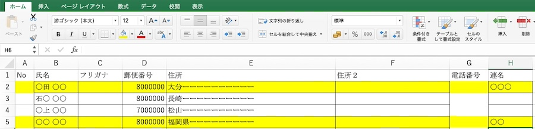

はじめに
「Word」を使った年賀状などのハガキの宛名書き（住所書き）の方法を解説します。
Excelを用いて住所録を作製後、wordの「差し込み文書」「はがき宛名面作成」を用いて宛名印刷を行います。
第１章 Excelを用いた住所録の作成
(1) 住所録.xlsxの雛形

(2) 住所録の作成
「Excel」のシートを使って、「雛形」のスタイルに準じて、住所録を作成する
第２章 Wordを用いたはがき印刷
- 「Word」を用いて、hagaki01_宛名テンプレート.docxを開く（「はい」「OK」「ファイルデータの検索」）
- ファイルデータを選択する（「はい」「OK」）
- Wordのブルーの帯の中の「差し込み文書」を選択する
- ブルーの帯の下、「宛名の選択」から「既存のリスト」を選択する
- 印刷する住所録を選択し、「開く」を押す
- 「結果のプレビュー」を押すと、リストの上から画面に表示される
- Wordのブルーの帯の中の「校閲」を選択する（「変更履歴の記録」＝OFF、すぐ右「変更履歴／コメントなし」に！）
- 「差し込み文書」に戻り、「青三角」クリックしながら、印刷する画面を表示する
- Wordの「ファイル」から「プリント」を選択し、プリントする （注意）プリンターでは、用紙の印刷面は「下」に向ける（方向はチェックすること）！
第３章 フォルダの構成例
「宛名印刷」フォルダ
・ hagaki01_宛名テンプレート.docx
・ 住所録＿2025年賀状.xlsx
・ 住所録＿案内状用.xlsx